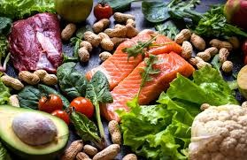
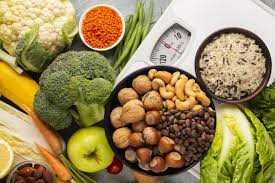

conhecendo os alimentos: do natural ao industrializados
Alimentos saudáveis são fontes de nutrientes essenciais — carboidratos, proteínas, gorduras boas, vitaminas, minerais e fibras — necessários para o funcionamento do corpo, prevenção de doenças e bem-estar físico/mental. Uma dieta equilibrada baseia-se em comida de verdade, preferencialmente fresca, colorida e minimamente processada, evitando industrializados.


São geralmente da natureza planta solo ou animal
Alimentos saudáveis são cruciais para a saúde porque fornecem os nutrientes essenciais — proteínas, carboidratos, gorduras boas, fibras, vitaminas e minerais — que o corpo não produz sozinho, garantindo seu pleno funcionamento. Uma dieta equilibrada previne doenças crônicas (como diabetes e hipertensão), fortalece o sistema imunológico, aumenta a disposição e melhora a saúde.